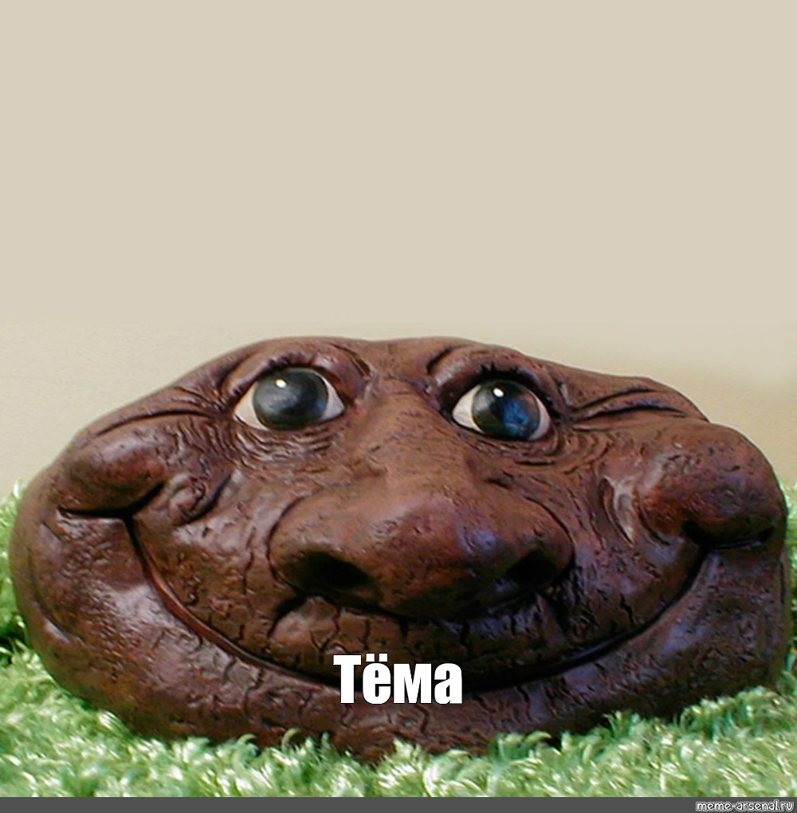
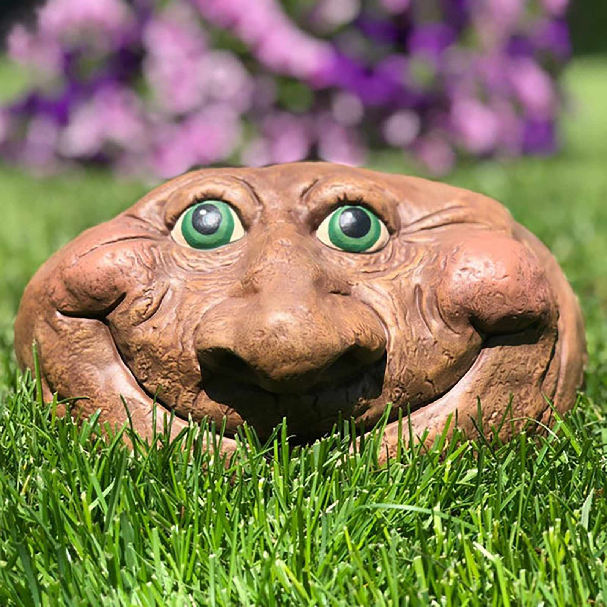
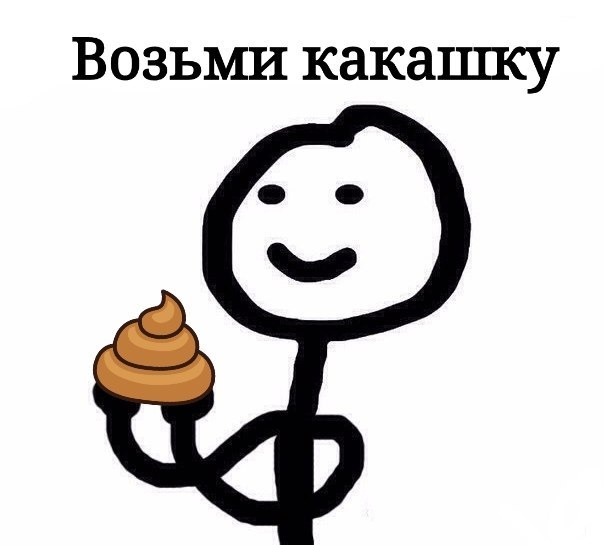
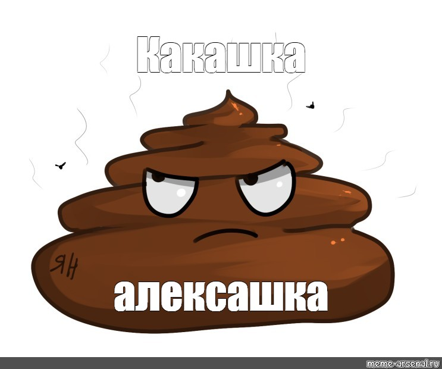
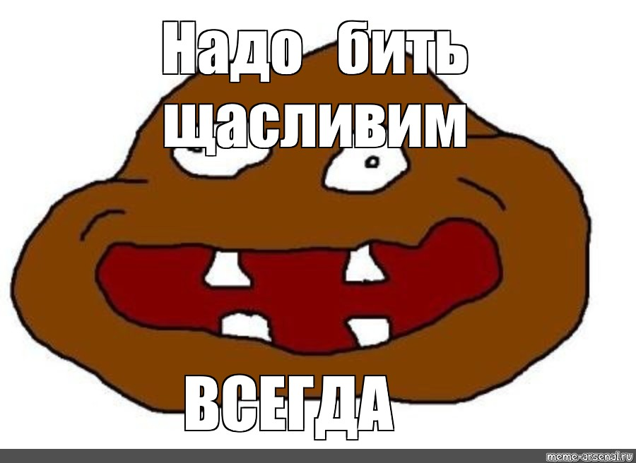
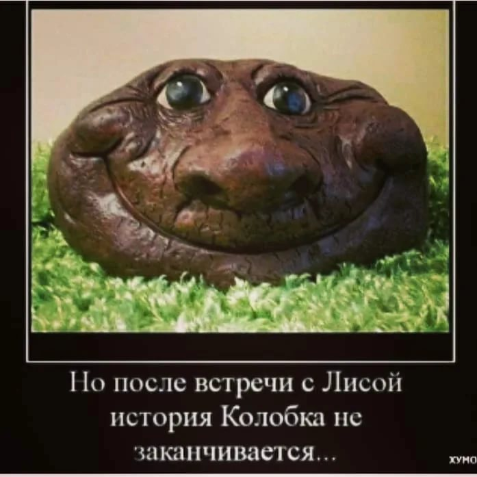
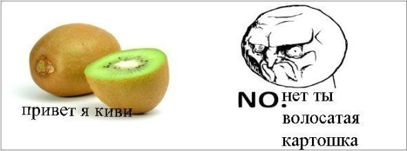
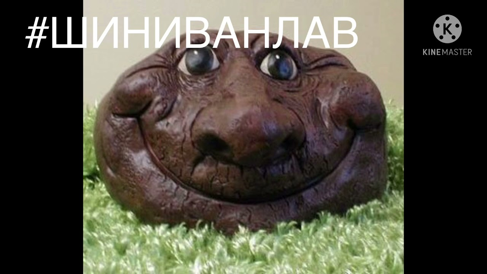
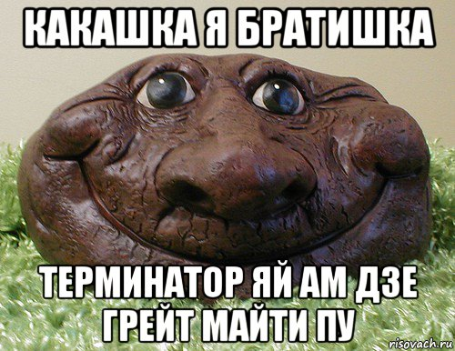
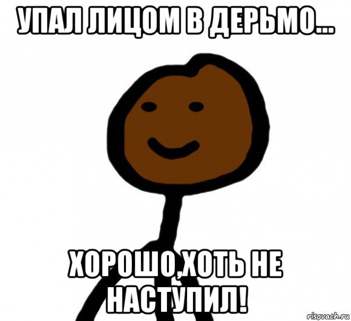

eto kakashkini fotografii
zasrat

чтобы с чистой жопой жить,
приходи, какашка
ждёт тебя бумажка.
сходил по-большому -
стал с чистою душою.

Про весну
Круговорот говна в природе,
Мы видим чаще по весне
Когда идешь ты по дороге
Оно валяется везде.
Посмотришь вправо, глянешь влево
Кругом посрал какой-то гад
Но я крестьянин по натуре
И этому безумно рад.
Уж солнце ярче привечает
Оно наладило свей свет
Но я всё чаще замечаю
Что жизнь моя как туалет

Хочется быть гением,
Но, видно, не дано.
Нету вдохновения
И в голове говно.

Есть люди подобные говну,
Они никогда не идут ко дну.
И сколько б мы их не топили,
А глядь: они уж снова всплыли...

Мною вы покакали...
Пахну я невкусно.
Холодно и грустно.
А вчера ещё была...
Очень вкусною едой.
А теперь плыву какашкой...
За какашкою другой.
Что ж за жизнь такая...
У меня вонючая.
Родилась какашкой я...
А хотела... тучкою.
По трубе плыву я...
Мне темно и грустно.
В унитазе меня смыли...
Пахну я... не вкусно.

плывёт какашка по волнам
плывёт куда-то вдаль
плывёт она совсем одна
в душе её печаль...

Чтоб Эгоизм Наш Проявить,
Назвать Козлом или Букашкой,
И даже!... Может быть Какашкой?

Одно я знаю, и причём давно:
и в золотом толчке - одно говно.
.jpg) И о тебя, смекнул я уж давно,
И о тебя, смекнул я уж давно,
не вытрут ноги, если ты - говно.

Весна, конечно же красна,
Вновь пробуждается природа,
И тают залежи говна
Скопившиеся за пол года...

а вот какашке не дано
поэта вдохновить
хотя ей тоже суждено
в краю далёком плыть...